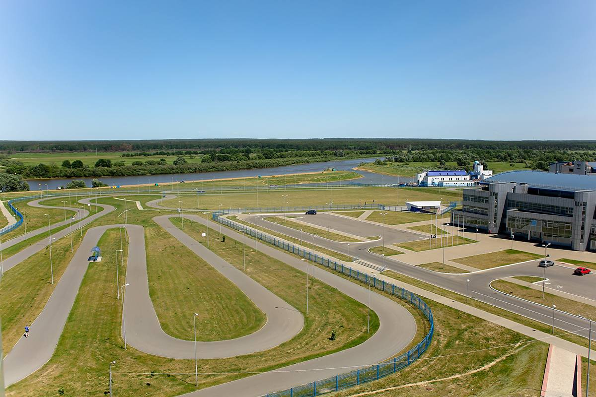

Два с половиной километра здоровья
Трасса, введённая в 2012 году на живописном берегу Днепра, — это 2,5 километра асфальтированной лыжной дороги с перепадами высот. Зимой по ней идут лыжники, летом — лыжероллеры и роликовые коньки: тренировки идут круглый год, сезон здесь не отменить.
Трасса работает в двух режимах. С одной стороны, это домашний участок отделения биатлона ЦОР, где секция занимается с 2009 года, а с 2013-го базируется в Центре. С другой — открытое пространство для всех: массовое катание на лыжах, лыжероллерах и коньках доступно в расписании, которое публикует ЦОР.
Юные биатлонисты Жлобина регулярно попадают в призёры Кубка Белорусской федерации биатлона — главного детского старта страны. А когда в 2022 году открылась тренировочная ледовая арена, в её составе появился и стрелковый тир для биатлонистов — теперь отрабатывать стрельбу можно не покидая спортивного квартала.
Утренний запах смолы и мха, дыхание в паре, размеренный ритм палок — трасса на берегу Днепра стала любимым маршрутом не только спортсменов, но и всех, кто любит движение на свежем воздухе. Здесь начинается биатлонная осень и заканчивается лыжная весна.